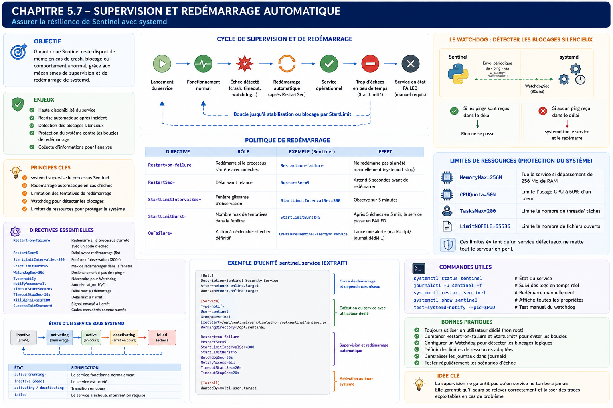

Chapitre 5.7 — Supervision et redémarrage automatique
Campagne 5 — systemd et services
« Un bon service n'est pas celui qui ne tombe jamais. C'est celui qui revient automatiquement à un état opérationnel lorsque quelque chose tourne mal. »
Vous êtes ici
Partie I — Construire un socle sécurisé
Campagne 5 — systemd et les services
5.1 Comprendre systemd
5.2 Les unités (.service, .socket, .target…)
5.3 Créer le service Sentinel
5.4 Sandboxing systemd
5.5 Capacités Linux
5.6 Journalisation avec journald
► 5.7 Supervision et redémarrage automatique
5.8 Mission : rendre Sentinel résilient
Objectifs pédagogiques
À la fin de ce chapitre, vous serez capable de :
- comprendre comment systemd supervise réellement un service ;
- distinguer une application vivante d'une application réellement opérationnelle ;
- configurer intelligemment les politiques de redémarrage ;
- utiliser les mécanismes de watchdog ;
- préparer Sentinel à fonctionner plusieurs mois sans intervention humaine.
Pourquoi ce chapitre existe
Une application qui démarre correctement n'est pas forcément une application fiable. Prenons un exemple. Sentinel démarre parfaitement. Pendant plusieurs semaines tout fonctionne. Puis un matin... un thread reste bloqué. Le processus est toujours présent. Le PID existe. Le CPU est presque à zéro. Aucune erreur n'apparaît. Pourtant, plus aucun agent ne reçoit de réponse. systemd considère pourtant que le service est : Active (running) Le problème est évident. Le processus est vivant. Le service est mort.
Cette différence est probablement l'une des notions les plus importantes à comprendre lorsqu'on conçoit une infrastructure résiliente.
Vue d'ensemble
Théorie détaillée
Deux visions très différentes
Beaucoup d'outils anciens se contentaient de vérifier ceci :
Cette hypothèse est fausse. Un processus peut exister tout en étant incapable de rendre le moindre service. Par exemple :
- boucle infinie ;
- deadlock ;
- attente réseau permanente ;
- saturation mémoire ;
- thread principal bloqué.
Dans tous ces cas, le PID est toujours présent. L'application est pourtant inutilisable.
Les états vus par systemd
systemd ne se contente pas de lancer un programme. Il suit en permanence son évolution. Schématiquement.
Chaque changement d'état est enregistré. Chaque transition peut déclencher une action. Cette approche constitue la base de la supervision moderne.
Active n'est pas Healthy
Voici une confusion extrêmement fréquente. Prenons cette sortie.
Active:
active (running)
Que signifie-t-elle exactement ? Uniquement ceci. Le processus principal existe toujours. Rien de plus. Cela ne garantit absolument pas que :
- Sentinel accepte des connexions ;
- les threads répondent ;
- la base de données soit accessible ;
- FreeIPA soit joignable ;
- les certificats soient valides.
Un service peut être :
Cette distinction explique pourquoi de nombreuses infrastructures ajoutent ensuite :
- des sondes applicatives ;
- des probes HTTP ;
- des watchdogs.
La première supervision : Restart
Nous avons déjà rencontré :
Restart=on-failure
Voyons maintenant son fonctionnement interne. Supposons le scénario suivant.
systemd détecte immédiatement : Échec Puis applique la politique définie.
Le temps d'indisponibilité est réduit à quelques secondes.
Les différentes politiques
systemd propose plusieurs comportements.
no
Restart=no
Jamais de redémarrage. Approprié pour certains traitements ponctuels. Très rarement pour un serveur.
always
Restart=always
Le service est relancé après une sortie normale du programme, une erreur, un signal ou un délai dépassé. Une commande explicite systemctl stop ne provoque toutefois pas de redémarrage. La politique reste souvent trop agressive, car une application conçue pour terminer proprement peut être relancée sans fin.
on-success
Restart=on-success
Le redémarrage intervient uniquement après une terminaison considérée comme normale. Cas relativement rare.
on-abnormal
Uniquement après :
- un signal ;
- un crash ;
- un timeout.
on-failure
Le choix retenu dans ce manuel. Il couvre :
- les codes d'erreur ;
- les plantages ;
- les exceptions fatales ;
- les signaux inattendus.
Tout en laissant un arrêt volontaire... être réellement un arrêt.
on-watchdog
Nous y reviendrons plus loin. Le redémarrage intervient uniquement lorsque le watchdog estime que le service ne répond plus.
RestartSec
Redémarrer immédiatement n'est pas toujours souhaitable. Prenons une erreur de configuration.
En quelques secondes, des centaines de redémarrages peuvent se produire. Pour éviter ce comportement, on définit généralement :
RestartSec=5
systemd attendra : 5 secondes avant chaque nouvelle tentative. Ce délai permet :
- aux administrateurs d'intervenir ;
- aux journaux de rester lisibles ;
- d'éviter une consommation CPU inutile.
StartLimitIntervalSec
Le délai seul ne suffit pas. Imaginons maintenant une erreur permanente. Pendant plusieurs heures, Sentinel continue :
Cette boucle peut produire :
- plusieurs milliers d'événements ;
- des gigaoctets de journaux ;
- une forte charge CPU.
systemd introduit donc un mécanisme supplémentaire. Les directives suivantes appartiennent à la section [Unit], et non à [Service].
StartLimitIntervalSec=
Il définit une fenêtre temporelle. Par exemple :
StartLimitIntervalSec=300
Le système observe les cinq dernières minutes.
StartLimitBurst
Cette directive complète la précédente.
StartLimitBurst=5
Signification.
Maximum :
5 démarrages
pendant
300 secondes.
Au-delà, systemd abandonne. Le service passe dans l'état : failed Cette décision est extrêmement importante. Elle évite qu'une erreur permanente ne transforme le serveur en machine à redémarrer des processus.
Une politique réaliste
Pour Sentinel, une politique raisonnable pourrait être :
[Unit]
StartLimitIntervalSec=300
StartLimitBurst=5
[Service]
Restart=on-failure
RestartSec=5
Visualisons son comportement.
À partir de ce moment, une intervention humaine ou une automatisation explicitement autorisée devient nécessaire. Après correction de la cause, systemctl reset-failed sentinel remet notamment à zéro l'état d'échec et le compteur avant un nouveau démarrage. C'est généralement le comportement attendu pour une application critique.
Le Watchdog systemd
Nous avons jusqu'à présent traité un problème relativement simple. Le processus s'arrête. systemd le détecte immédiatement. Il peut alors appliquer :
Restart=on-failure
Mais revenons au scénario évoqué au début du chapitre. Sentinel ne plante pas. Il ne consomme presque plus de CPU. Le PID existe toujours. Les threads sont bloqués. Plus aucun agent ne reçoit de réponse. Pour systemd, le service est toujours : active (running) Nous avons donc besoin d'un autre mécanisme. C'est précisément le rôle du Watchdog.
Une idée très simple
Le Watchdog repose sur un principe extrêmement ancien. Le service doit régulièrement dire :
Je suis toujours vivant.
Si ce message cesse d'arriver, systemd considère que le service est probablement bloqué. Schématiquement.
Le watchdog ne cherche donc pas à savoir si le processus existe. Il vérifie que l'application est toujours capable de dialoguer avec systemd.
WatchdogSec
Le mécanisme s'active très simplement.
WatchdogSec=30s
Cette directive signifie :
Cette directive fixe le délai maximal entre deux notifications. L'application lit normalement $WATCHDOG_USEC ou utilise sd_watchdog_enabled() et envoie WATCHDOG=1 environ deux fois plus souvent que ce délai. Avec 30s, une notification toutes les quinze secondes laisse une marge raisonnable. À défaut de notification avant l'échéance, systemd considère le service comme défaillant.
Le rôle de Type=notify
Nous avons découvert dans le chapitre précédent :
Type=notify
Nous avions expliqué que ce mode permettait à l'application d'annoncer READY=1. Le watchdog utilise le même canal de communication : l'application envoie périodiquement WATCHDOG=1 et systemd remet son chronomètre à zéro. Type=notify sert à faire piloter l'état de préparation par READY=1 ; les notifications de watchdog reposent sur WatchdogSec= et ne doivent pas être confondues avec cette sémantique de démarrage.
Le protocole sd_notify()
Cette communication repose sur une petite bibliothèque. libsystemd Elle expose notamment la fonction :
sd_notify()
Le principe est extrêmement simple. Au démarrage. READY=1 Puis régulièrement. WATCHDOG=1 systemd n'a pas besoin de connaître l'état interne de Sentinel. Il lui suffit de recevoir régulièrement cette confirmation.
Exemple avec Sentinel
Imaginons la séquence suivante.
Le service est maintenant considéré comme opérationnel. Quelques secondes plus tard. WATCHDOG=1 Puis : WATCHDOG=1 Puis : WATCHDOG=1 Tout fonctionne normalement.
Que se passe-t-il en cas de blocage ?
Supposons maintenant qu'un deadlock survienne. Le thread principal ne répond plus. Plus aucun : WATCHDOG=1 n'est envoyé. Le chronomètre continue.
systemd applique alors immédiatement la politique définie. Par exemple :
Restart=on-failure
Le service est recréé.
Heartbeat
Le message : WATCHDOG=1 est souvent appelé : Heartbeat ou : Battement de cœur Cette image est particulièrement pertinente. Tant que le cœur bat, le service est vivant. Lorsque les battements cessent, systemd intervient.
Tous les services ont-ils besoin d'un Watchdog ?
Non. Prenons quelques exemples.
SSH
Le démon SSH ne réalise pratiquement aucun traitement complexe. Il attend simplement des connexions. Le watchdog apporte relativement peu.
Firewalld
Même remarque. Le démon reste principalement en attente d'événements.
Sentinel
Situation très différente. Sentinel :
- communique avec FreeIPA ;
- maintient des connexions TLS ;
- traite des événements ;
- charge des plugins ;
- dialogue avec plusieurs agents ;
- utilise plusieurs threads.
La probabilité qu'un blocage logique survienne est beaucoup plus importante. Le Watchdog devient alors particulièrement intéressant.
Les faux positifs
Le watchdog doit être configuré avec prudence. Prenons :
WatchdogSec=2s
Supposons maintenant qu'une opération parfaitement normale prenne : 3 secondes Le résultat.
Le service est redémarré... alors qu'il fonctionnait correctement. On parle alors de : Faux positif. Le délai choisi doit toujours être cohérent avec le comportement réel de l'application.
Le watchdog n'est pas un monitoring
Une confusion apparaît souvent. Le watchdog répond à la question : Le service est-il encore capable de répondre ? Le monitoring répond à d'autres questions. Par exemple.
Ces informations seront étudiées dans la campagne consacrée à la supervision. Le watchdog constitue uniquement un premier niveau de protection.
Les limites de ressources
La supervision ne consiste pas uniquement à détecter un crash. Elle consiste également à empêcher un service de monopoliser la machine. systemd permet donc d'imposer plusieurs limites.
MemoryMax
Prenons :
MemoryMax=1G
MemoryMax= constitue une limite dure du cgroup. Si la consommation ne peut pas être maintenue sous 1G, le mécanisme OOM intervient dans l'unité. Sur une version récente de systemd utilisant la hiérarchie cgroup v2, MemoryHigh= est souvent utilisé comme seuil principal pour exercer une pression avant la limite, et MemoryMax= comme dernier rempart. Les versions Enterprise Linux plus anciennes peuvent proposer des directives et une hiérarchie différentes : systemd --version et systemctl show sentinel permettent de vérifier le support effectif. Les valeurs doivent dans tous les cas être testées avec la charge réelle.
TasksMax
Autre exemple.
TasksMax=200
Le service ne pourra pas créer plus de :
200 threads
ou
processus.
Une erreur de programmation ne pourra donc pas produire des milliers de threads.
CPUQuota
Autre limitation très utile.
CPUQuota=80%
La valeur correspond à 80 % du temps d'un cœur logique, et non à 80 % de toute une machine multicœur. 200% autoriserait par exemple l'équivalent de deux cœurs. Même en cas de boucle infinie, le quota réserve ainsi du temps processeur aux autres services.
LimitNOFILE
Les serveurs réseau ouvrent souvent un grand nombre de descripteurs de fichiers. Par exemple :
- sockets ;
- fichiers ;
- pipes.
systemd permet de fixer une limite.
LimitNOFILE=65535
Cette directive relève ici la limite de descripteurs du processus. Elle évite une valeur trop faible, mais une valeur élevée ne constitue pas à elle seule une protection contre la consommation excessive : la charge, la mémoire et les limites applicatives doivent également être surveillées.
Une unité orientée production
Notre unité Sentinel ressemble maintenant davantage à ce que l'on rencontre dans une infrastructure professionnelle.
[Unit]
StartLimitIntervalSec=300
StartLimitBurst=5
[Service]
User=sentinel
Group=sentinel
Type=notify
ExecStart=/opt/sentinel/bin/sentinel
Restart=on-failure
RestartSec=5
WatchdogSec=30s
MemoryMax=1G
TasksMax=200
CPUQuota=80%
LimitNOFILE=65535
Cette unité ne se contente plus de lancer une application. Elle décrit désormais :
- son cycle de vie ;
- sa politique de reprise ;
- ses limites de consommation ;
- sa surveillance ;
- sa résilience.
Nous passons progressivement d'un simple programme à un véritable service d'infrastructure.
Approfondissement
Un superviseur ne remplace pas une application robuste
Lorsque l'on découvre systemd, une idée revient souvent.
"Ce n'est pas grave si l'application plante, systemd la redémarrera."
C'est une erreur. Le rôle de systemd n'est pas de masquer les défauts d'une application. Son rôle est de garantir que l'infrastructure réagit correctement lorsqu'un défaut survient. Prenons deux situations.
Situation n°1
Sentinel plante une fois tous les six mois à cause d'un bug extrêmement rare.
Le mécanisme de redémarrage remplit parfaitement son rôle. L'incident reste pratiquement invisible pour les utilisateurs.
Situation n°2
Sentinel plante toutes les trois minutes.
systemd continue de fonctionner correctement. Pourtant, le problème est désormais l'application elle-même. La supervision ne doit jamais servir à cacher une mauvaise qualité logicielle. Elle permet uniquement de rendre l'infrastructure plus résiliente.
La disponibilité n'est pas la résilience
Ces deux notions sont souvent confondues. Pourtant, elles désignent des réalités très différentes. La disponibilité répond à la question :
Le service fonctionne-t-il maintenant ?
La résilience répond à une autre :
Que se passe-t-il lorsqu'il ne fonctionne plus ?
Une application peut présenter une excellente disponibilité... tout en étant incapable de se remettre d'un incident. À l'inverse, une application imparfaite, mais capable de retrouver automatiquement un état opérationnel, sera souvent beaucoup plus adaptée à une exploitation en production.
Une bonne politique de redémarrage protège aussi les autres services
Lorsqu'un processus entre dans une boucle de crash, les conséquences dépassent largement cette seule application. Chaque redémarrage consomme :
- du CPU ;
- de la mémoire ;
- des entrées de journal ;
- parfois des connexions réseau ;
- parfois des ressources disque.
Sans limitation, un seul service défectueux peut dégrader l'ensemble du serveur. Les directives :
RestartSec=
StartLimitIntervalSec=
StartLimitBurst=
protègent donc autant le système que l'application.
Concevoir la politique
Un architecte considère toujours qu'une panne est inévitable. La véritable question devient alors :
Comment voulons-nous que le système réagisse ?
Pour chaque scénario, une réponse doit exister.
| Scénario | Mécanisme local | Limite à connaître |
|---|---|---|
| crash du processus | Restart=on-failure |
ne corrige pas une erreur permanente |
| blocage logique | WatchdogSec= |
exige un heartbeat représentatif de la santé |
| fuite mémoire | MemoryHigh= puis MemoryMax= |
nécessite un seuil mesuré |
| explosion de threads ou processus | TasksMax= |
compte les tâches du cgroup |
| consommation CPU anormale | CPUQuota= |
limite la consommation, sans diagnostiquer la cause |
L'architecte ne cherche pas uniquement à empêcher les erreurs. Il prépare également les mécanismes qui permettront au système de survivre lorsqu'elles apparaîtront.
Concevoir un service auto-réparable
Le meilleur service n'est pas celui qui nécessite une intervention humaine. C'est celui qui retrouve seul un état stable. Visualisons la différence.
Service classique
Service résilient
Chaque intervention humaine supprimée réduit :
- le temps d'indisponibilité ;
- les coûts d'exploitation ;
- le risque d'erreur.
Point de vue offensif
Un attaquant cherche souvent à empêcher un service de fonctionner. Plusieurs stratégies sont possibles. Par exemple :
- provoquer un crash ;
- déclencher une fuite mémoire ;
- saturer les threads ;
- bloquer une boucle d'événements ;
- épuiser les descripteurs de fichiers.
Toutes ces attaques poursuivent le même objectif. Faire disparaître un service critique.
Le déni de service silencieux
Le scénario le plus dangereux n'est pas toujours le crash. Prenons Sentinel. Le processus reste vivant. Le PID existe. Les journaux ne montrent aucune erreur. Pourtant, plus aucun agent n'est traité. Le service paraît opérationnel. Il est pourtant inutilisable. Cette situation est beaucoup plus difficile à détecter qu'un arrêt brutal. Le watchdog a précisément été conçu pour répondre à ce type de problème.
Les attaques par consommation de ressources
Certaines vulnérabilités permettent de provoquer :
- une consommation mémoire infinie ;
- la création massive de threads ;
- l'ouverture de milliers de sockets.
Sans limites, le serveur entier peut devenir indisponible. Les directives :
MemoryMax
TasksMax
LimitNOFILE
CPUQuota
forment alors une véritable ligne de défense contre ces attaques.
En entreprise
Les grandes infrastructures distinguent généralement plusieurs niveaux de supervision.
Niveau 1 — systemd
Objectif : maintenir le service vivant. Fonctions :
- restart ;
- watchdog ;
- limites de ressources.
Niveau 2 — supervision locale
Objectif : mesurer l'état du serveur. Exemples :
- mémoire ;
- CPU ;
- disque ;
- réseau.
Niveau 3 — supervision applicative
Objectif : vérifier que Sentinel remplit réellement sa mission. Exemples :
- nombre d'agents connectés ;
- temps moyen de réponse ;
- nombre d'événements traités ;
- files d'attente.
Niveau 4 — supervision métier
Objectif : détecter un impact sur le service rendu. Exemple.
Plus aucun agent
n'envoie
de rapports de sécurité
depuis dix minutes.
Le serveur fonctionne peut-être parfaitement. Pourtant, le service rendu aux utilisateurs est interrompu. Ces différents niveaux ne se remplacent jamais. Ils se complètent.
Culture technique
Les mécanismes étudiés dans ce chapitre existent également dans la plupart des orchestrateurs modernes. Par exemple. Dans Kubernetes, on retrouve des concepts très proches :
- RestartPolicy ;
- Liveness Probe ;
- Readiness Probe ;
- Resource Limits ;
- Resource Requests.
Autrement dit, apprendre à construire une unité systemd robuste prépare naturellement à la compréhension des plateformes d'orchestration modernes. systemd constitue souvent le premier niveau de résilience. Kubernetes industrialise ensuite ces mêmes principes à l'échelle de centaines ou de milliers de serveurs.
Piège classique
Utiliser Restart=always par réflexe
Beaucoup de tutoriels proposent :
Restart=always
sans autre explication. Cette directive peut pourtant produire des comportements surprenants. Si Sentinel termine volontairement avec le code 0 après avoir accompli sa tâche, systemd le relance malgré cette réussite. En revanche, un systemctl stop sentinel explicite désactive bien le service sans appliquer Restart=. Pour la majorité des applications serveur,
Restart=on-failure
est généralement beaucoup plus adapté.
Croire qu'un PID suffit
Un autre piège consiste à écrire des scripts comme :
ps aux | grep sentinel
Si un processus existe, le script conclut : Le service fonctionne. Cette hypothèse est dangereuse. Un processus bloqué, sans activité, reste visible dans ps. Cela ne signifie absolument pas qu'il fournit encore le service attendu.
TP 1 — Tester la politique de redémarrage
Objectif
Construire une unité Sentinel capable de survivre automatiquement aux incidents les plus courants.
Étape 1 — Tester Restart=on-failure
Modifier volontairement Sentinel afin qu'il quitte avec :
sys.exit(1)
Observer :
systemctl status sentinel
Vérifier le redémarrage automatique.
Étape 2 — Configurer les limites
Ajouter successivement :
RestartSec=5
StartLimitIntervalSec=300
StartLimitBurst=5
Créer volontairement une erreur permanente. Observer le passage en état : failed Comprendre pourquoi systemd cesse volontairement les redémarrages.
TP 2 — Éprouver les limites et mesurer la reprise
Étape 3 — Simuler une fuite mémoire
Créer une version de test de Sentinel consommant progressivement de la mémoire. Configurer :
MemoryMax=256M
Observer le comportement du service lorsque cette limite est atteinte. Comparer avec un lancement manuel hors systemd.
Étape 4 — Simuler un blocage logique
Créer un thread volontairement bloqué. Configurer :
Type=notify
WatchdogSec=30s
Implémenter un heartbeat régulier. Observer la réaction de systemd lorsque celui-ci cesse.
Étape 5 — Mesurer le temps de reprise
Chronométrer :
- le temps de crash ;
- le délai avant redémarrage ;
- le retour complet en production.
Comparer plusieurs politiques de redémarrage. Choisir celle qui convient le mieux à Sentinel.
Mission d'ingénieur
Votre entreprise exploite une plateforme de cybersécurité composée de plusieurs dizaines de services. L'objectif fixé est ambitieux :
Aucun incident logiciel isolé ne doit nécessiter une intervention humaine immédiate.
Vous devez proposer une architecture de résilience reposant sur systemd. Votre proposition devra notamment définir :
- les politiques de redémarrage ;
- les watchdogs ;
- les limites CPU et mémoire ;
- les seuils de protection contre les boucles de crash ;
- les métriques à transmettre à la supervision centrale.
Le résultat devra servir de standard à toutes les nouvelles applications développées dans l'entreprise.
Impact sur Sentinel
Sentinel devient désormais un véritable service auto-réparable. En cas de :
- crash ;
- blocage ;
- consommation excessive de ressources ;
- comportement anormal,
systemd intervient automatiquement selon une politique clairement définie. Cette capacité de reprise constitue une étape essentielle avant d'industrialiser le déploiement avec RPM, Ansible et Podman dans les campagnes suivantes.
Synthèse
- Un processus vivant n'est pas nécessairement un service opérationnel.
Restart=on-failureconstitue généralement la meilleure politique de redémarrage pour un serveur.RestartSec,StartLimitIntervalSecetStartLimitBurstévitent les boucles infinies.- Le watchdog détecte les blocages logiques qu'un simple contrôle de PID ne peut pas voir.
- Les limites de ressources (
MemoryMax,TasksMax,CPUQuota,LimitNOFILE) protègent autant le système que l'application. - Une bonne supervision cherche à rendre un service résilient, pas simplement disponible.
Schéma récapitulatif

Pour aller plus loin
Tous les mécanismes sont maintenant disponibles séparément. La mission finale demande de les assembler, de justifier chaque directive et de prouver le comportement de Sentinel face à plusieurs incidents.
← 5.6 — Journalisation avec journald · 5.8 — Mission : rendre Sentinel résilient →